Boolean Algebra
- Boolean Functions
- Identities
- Logic Gates
- K – Mapping
- Boolean Expressions
13.5 hours
a. Discuss the Boolean Algebra, functions and identities
b. Apply and solve problems in Boolean functions and identities
KEY TAKEAWAYS
Boolean algebra is a division of mathematics that deals with operations on logical values and
incorporates binary variables. Boolean algebra traces its origins to an 1854 book by
mathematician George Boole.
The distinguishing factor of Boolean algebra is that it deals only with the study of binary variables.
Most commonly Boolean variables are presented with the possible values of 1 ("true") or 0
("false"). Variables can also have more complex interpretations, such as in set theory. Boolean
algebra is also known as binary algebra.
Boolean algebra is different from elementary algebra as the latter deals with numerical operations
and the former deals with logical operations. Elementary algebra is expressed using basic
mathematical functions, such as addition, subtraction, multiplication, and division, whereas
Boolean algebra deals with conjunction, disjunction, and negation.
The concept of Boolean algebra was first introduced by George Boole in his book, The
Mathematical Analysis of Logic, and further expanded upon in his book, An Investigation of the
Laws of Thought. Since its concept has been detailed, Boolean algebra's primary use has been
in computer programming languages. Its mathematical purposes are used in set theory
and statistics.
A Boolean function is described by an algebraic expression consisting of binary variables, the constants 0 and 1, and the logic operation symbols +, . , ‘. For a given set of values of the binary variables involved, the Boolean function can have a value of 0 or 1. For example, the Boolean function F = x′y + z is defined in terms of three binary variables x, y, z. The function is equal to 1 if x = 0 and y = 1 simultaneously or z = 1. Every Boolean function can be expressed by an algebraic expression, such as one mentioned above, or in terms of a Truth Table. A function may be expressed through several algebraic expressions, on account of them being logically equivalent, but there is only one unique truth table for every function. A Boolean function can be transformed from an algebraic expression into a circuit diagram composed of logic gates connected in a particular structure. Circuit diagram for F–.
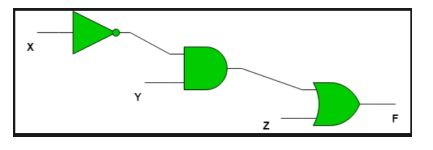Any binary variable can take one of two forms, x or x′. A Boolean function can be expressed in terms of n binary variables. If all the binary variables are combined together using the AND operation, then there are a total of 2n combinations since each variable can take two forms. Each of the combinations is called a minterm or standard product. A minterm is represented by mi where i is the decimal equivalent of the binary number the minterm is designated. Important Note – In a minterm, the binary variable is un-primed if the variable is 1 and it is primed if the variable is 0 i.e. if the minterm is xy′ then that means x = 1 and y = 0. For example, for a boolean function in two variables the minterms are –
m0 = x′y′, m1 = x′y, m2 = xy′, m3 = xy
In a similar way, if the variables are combined together with OR operation, then the term obtained is called a maxterm or standard sum. A maxterm is represented by Mi where i is the decimal equivalent of the binary number the maxterm is designated.
Important Note – In a maxterm, the binary variable is un-primed if the variable is 0 and it
is primed if the variable is 1 i.e. if the maxterm is x′ + y then that means x′ = 1 and y=0.
For example, for a Boolean function in two variables the maxterms are –
M0 = x + y, M1 = x + y′, M2 = x′, +y, M3 = x′ + y
Minterms and Maxterms for function in 3 variables:
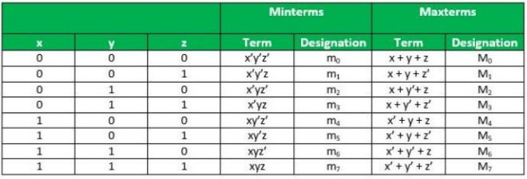Relation between Minterms and Maxterms – Each minterm is the complement of its corresponding maxterm.
For example, for a boolean function in two variables –
Constructing Boolean Functions – Now that we know what minterms and maxterms are, we can use them to construct boolean expressions.
“A Boolean function can be expressed algebraically from a given truth table by forming a
minterm for each combination of the variables that produces a 1 in the function and then taking
the OR of all those terms.”
For example, consider two functions f1 and f2 with the following truth tables –
The function f1 is 1 for the following combinations of x, y, z – 001,100,111.
The corresponding minterms are- x1y1z,xy1z1, xyz.
Therefore the algebraic expression for f1 is-
Similarly, the algebraic expression for f2 is-
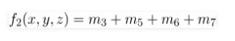If we use De Morgans Law on f1 and f2 all 1’s become 0 and all 0’s become 1. Therefore, we get –
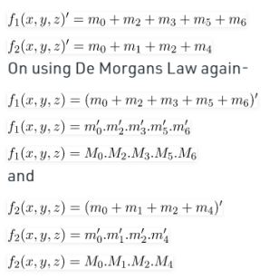We can conclude from the above that boolean functions can be expressed as a sum of
minterms or a product of maxterms.
“Boolean functions expressed as a sum of minterms or product of maxterms are said to be
in canonical form.
Example 1 – Express the following boolean expression in SOP and POS forms-
F = x + y1z
Solution – The expression can be transformed into SOP form by adding missing variables in each term by multiplying by k + k1 = 1 where k is the missing variable. It follows from the fact that – 1. x = x. 1 = x
F = x(y + y′) + y′z
F = xy + xy′ + y′z
F = xy(z + z′) + xy′(z + z′) + (x + x′)y′z
F = xyz + xyz′ + xy′z + xy′z′ + xy′z + x′y′z
On rearranging the minterms in ascending order
F = x′y′z + xy′z′ + xy′z + xyz′ + xyz F = m1 + m4 + m5 + m6 + m7
If we want the POS form, we can double negate the SOP form as stated above to get-
F = M0. M2. M3
The SOP and POS forms have a short notation of representation –
F = (x, y, z ) = ∑(1, 4, 5, 6, 7 )
F = (x, y, z) = ∏(0, 2, 3 )
Canonical forms are basic forms obtained from the truth table of the function. These forms are
usually not used to represent the function as they are cumbersome to write and it is preferable
to represent the function in the least number of literals possible.
There are two types of standard forms –
1. Sum of Products (SOP) - A Boolean expression involving AND terms with one or more
literals each, OR’ed together.
2. Product of Sums(POS) - A Boolean expression involving OR terms with one or more
literals each, AND’ed together, e.g.
SOP − x′ + xy + yz′
POS − (x′). (x + y). (y + z′)
Like normal algebra, Boolean algebra has a number of useful identities. An "identity" is merely a relation that is always true, regardless of the values that any variables involved might take on. Many of these are very analogous to normal multiplication and addition, particularly when the symbols {0,1} are used for {FALSE,TRUE}. But while this can be useful, there are some identities that are different and that cause confusion for many people -- we will highlight these as we encounter them. We begin with a table summarizing these identities and then proceed to examine each of them in detail.
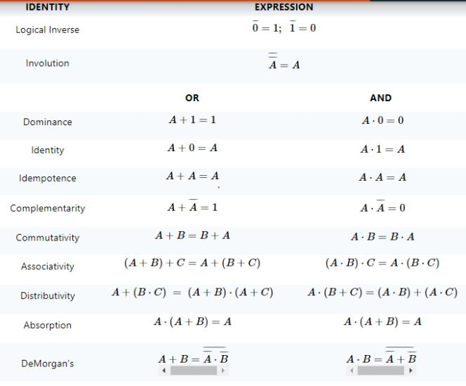Each of these identities can be proven by simply creating a fully-enumerated truth table for the
expression on the left (of the equality sign, not of the table) and another for the expression on the
right and showing that they produce the same result for every possible input combination. This
will be done for each identity. A more elegant way is to use previously proven identities to prove
subsequent ones. In general, we will not do this primarily because the ordering of the table above
is intended to follow a largely intuitive progression and it is not optimized for supporting a chain
of Boolean proofs.
Notice that for each identity involving the OR and/or the AND operator, there is a corresponding
identity in which the roles of these two operators are reversed. This is due to the "duality" of AND
and OR, a topic explored in detail in a separate article. In all of the expressions in this article, we make no assumption about either the precedence or
the associativity of the operators, meaning that we will rely heavily on fully parenthesized
expressions. Because we will use the overbar notation for logical negation (the NOT operator),
we will use the natural convention that the expression underneath the bar is evaluated and the
result of that is then inverted (NOTed).
We will now work our way through the table of identities, in order, making observations about each, usually including a "common sense" informal proof. In addition to the Boolean expressions, each identity will also be depicted graphically using standard logic schematic symbols. The symbols for NOT, OR, and AND were introduced in the Boolean Basics article. In addition to these, we will use the BUF symbol to represent a non-inverting buffer. This gate merely copies its input to its output. Furthermore, while we use {0, 1} to represent {FALSE, TRUE} in the Boolean expressions, we will use {LO, HI} to represent them in the schematic diagrams.
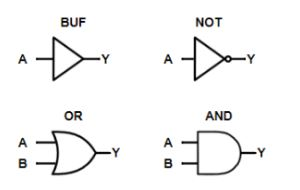Digital systems are said to be constructed by using logic gates. These gates are the AND, OR, NOT, NAND, NOR, EXOR and EXNOR gates. The basic operations are described below with the aid of truth tables.
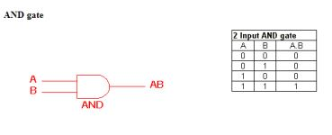The AND gate is an electronic circuit that gives a high output (1) only if all its inputs are high. A dot (.) is used to show the AND operation i.e. A.B. Bear in mind that this dot is sometimes omitted i.e. AB.
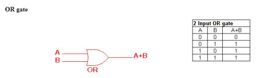The OR gate is an electronic circuit that gives a high output (1) if one or more of its inputs are high. A plus (+) is used to show the OR operation.
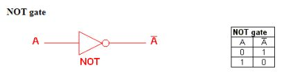The NOT gate is an electronic circuit that produces an inverted version of the input at its output. It is also known as an inverter. If the input variable is A, the inverted output is known as NOT A. This is also shown as A', or A with a bar over the top, as shown at the outputs. The diagrams below show two ways that the NAND logic gate can be configured to produce a NOT gate. It can also be done using NOR logic gates in the same way.
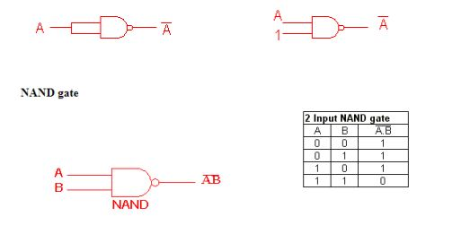This is a NOT-AND gate which is equal to an AND gate followed by a NOT gate. The outputs of all NAND gates are high if any of the inputs are low. The symbol is an AND gate with a small circle on the output. The small circle represents inversion.
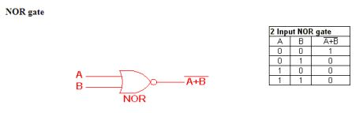This is a NOT-OR gate which is equal to an OR gate followed by a NOT gate. The outputs of all NOR gates are low if any of the inputs are high. The symbol is an OR gate with a small circle on the output. The small circle represents inversion.
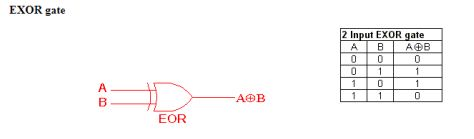The 'Exclusive-OR' gate is a circuit which will give a high output if either, but not both, of its two inputs are high. An encircled plus sign ( ) is used to show the EOR operation.
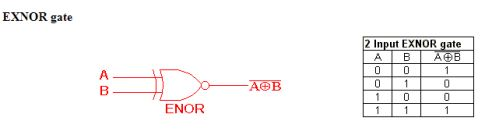The 'Exclusive-NOR' gate circuit does the opposite to the EOR gate. It will give a low output
if either, but not both, of its two inputs are high. The symbol is an EXOR gate with a small circle
on the output. The small circle represents inversion.
The NAND and NOR gates are called universal functions since with either one the AND and OR
functions and NOT can be generated.
Note:
A function in sum of products form can be implemented using NAND gates by replacing all AND
and OR gates by NAND gates.
A function in product of sums form can be implemented using NOR gates by replacing all AND
and OR gates by NOR gates.
Table 1. Logic gate symbols
Table 2 is a summary truth table of the input/output combinations for the NOT gate together with
all possible input/output combinations for the other gate functions. Also note that a truth table with
'n' inputs has 2n rows. You can compare the outputs of different gates.
In many digital circuits and practical problems we need to find expression with minimum
variables. We can minimize Boolean expressions of 3, 4 variables very easily using K-map
without using any Boolean algebra theorems. K-map can take two forms Sum of Product (SOP)
and Product of Sum (POS) according to the need of problem. K-map is table like representation
but it gives more information than TRUTH TABLE. We fill grid of K-map with 0’s and 1’s then
solve it by making groups.
Steps to solve expression using K-map
1. K – map 3 variables
Z = ∑A, B, C (1, 2, 3 )
From red group we get product term—
A’C
From green group we get product term—
AB
Summing these product terms we get- Final expression (A’C+AB)
2. K – map 4 variables
F (P,Q, R, S) = ∑(0, 2, 5, 7, 8, 10, 13, 15 )
From red group we get product term—
QS
From green group we get product term—
Q’S’
Summing these product terms we get- Final expression (QS+Q’S’)
1. K – Map 3 variables
F (A, B, C) = ∏(0, 3, 6,7 )
From red group we find terms
A B C’
Taking complement of these two
A’ B’ C
Now sum up them
(A’ + B’ + C)
From green group we find terms
B C
Taking complement of these two terms
B’ C’
Now sum up them
(B’+C’)
From brown group we find terms
A’ B’ C’
Taking complement of these two
A B C
Now sum up them
(A + B + C)
We will take product of these three terms :Final expression (A’ + B’ + C) (B’ + C’) (A + B +
C)
2. K – Map 4 variables
F (A, B, C,D) = ∏(3, 5, 7, 8, 10, 11, 12, 13)
From green group we find terms
C’ D B
Taking their complement and summing them
(C+D’+B’)
From red group we find terms
C D A’
Taking their complement and summing them
(C’+D’+A)
From blue group we find terms
A C’ D’
Taking their complement and summing them
(A’+C+D)
From brown group we find terms
A B’ C
Taking their complement and summing them
(A’+B+C’)
Finally we express these as product – (C+D’+B’). (C’+D’+A). (A’+C+D). (A’+B+C’)
PITFALL– *Always remember POS ≠ (SOP)’
*The correct form is (POS of F) = (SOP of F’)’
Boolean expressions What’s your favorite kind of test? Essay format? Multiple choice? In the world of computer programming, one only takes one kind of test: a Boolean test — true or false. A Boolean expression(named for mathematician George Boole) is an expression that evaluates to either true or false. Let’s look at some common language examples:
In this chapter, I will show how to use a variable in a Boolean expression, allowing a sketch to take different paths depending on the current value stored in the variable.
The following operators can be used in a Boolean expression.
Boolean expressions (often referred to as “conditionals”) operate within the sketch as questions.
Is 15 greater than 20? If the answer is yes (i.e., true), you can choose to execute certain
instructions (such as draw a rectangle); if the answer is no (i.e., false), those instructions are
ignored. This introduces the idea of branching; depending on various conditions, the program can
follow different paths. In the physical world, this might amount to instructions like so:
If I am hungry then eat some food, otherwise if I am thirsty, drink some water, otherwise, take a
nap.
In Processing, you might have something more like:
If the mouse is on the left side of the screen, draw a rectangle on the left side of the screen.
Or, more formally, with the output shown in Figure 5-1,
The Boolean expression and resulting instructions in the above source code is contained within
a block of code with the following syntax and structure:
if (boolean expression) {
// code to execute if boolean expression is true
}
The structure can be expanded with the keyword else to include code that is executed if the
Boolean expression is false. This is the equivalent of “otherwise, do such and such.”
if (boolean expression) {
// code to execute if boolean expression is true
For example, I could say the following, with the output shown in Figure 5-2
If the mouse is on the left side of the screen, draw a white background, otherwise draw a black
background.
if (mouseX < width/2) {
background(255);
} else {
background(0); }
Finally, for testing multiple conditions, you can employ an else if. When an else if is used, the
conditional statements are evaluated in the order presented. As soon as one Boolean expression
is found to be true, the corresponding code is executed and the remaining Boolean expressions
are ignored. See Figure 5-3.
if (boolean expression #1) {
// code to execute if boolean expression #1 is true
} else if (boolean expression #2) {
// code to execute if boolean expression #2 is true
} else if (boolean expression #n) {
// code to execute if boolean expression #n is true
} else {
// code to execute if none of the above
// boolean expressions are true
}
Taking the simple mouse example a step further, I could say the following, with results shown in
Figure 5-4
If the mouse is on the left third of the window, draw a white background, if it’s in the middle third,
draw a gray background, otherwise, draw a black background.
if (mouseX < width/3) {
background(255);
} else if (mouseX < 2*width/3) {
background(127);
} else {
background(0);
}
if (mouseX < width/3) { background(255); } else if (mouseX < 2*width/3) { background(127); } else {
background(0); }
You have conquered the simple if statement:
If my temperature is greater than 98.6, then take me to the doctor.
Sometimes, however, simply performing a task based on one condition is not enough. For
example:
If my temperature is greater than 98.6 OR I have a rash on my arm, take me to the doctor.
If I am stung by a bee AND I am allergic to bees, take me to the doctor.
The same idea applies in programming.
If the mouse is on the right side of the screen AND the mouse is on the bottom of the screen,
draw a rectangle in the bottom right corner.
Your first instinct might be to write the above code using a nested if statement, like so:
if (mouseX > width/2) {
if (mouseY > height/2) {
fill(255);
rect(width/2,height/2,width/2,height/2);
}
}
In other words, you would have to get a true answer for two if statements before the code is
executed. This works, yes, but can be accomplished in a simpler way using what is called a
“logical and,” written as two ampersands (“&&”). A single ampersand (“&”) means something else1
in processing so make sure you include two!
A “logical or” is two vertical bars (a.k.a. two “pipes”) “||”. If you can’t find the pipe, it’s typically on
the keyboard as shift-backslash.
In addition to && and ||, you also have access to the logical operator “not,” written as an
exclamation point:”!”
If my temperature is NOT greater than 98.6, I won’t call in sick to work.
If I am stung by a bee AND I am NOT allergic to bees, I’ll be fine!
A Processing example is:
If the mouse is NOT pressed, draw a circle, otherwise draw a square.
Notice this example could also be written omitting the not, saying:
If the mouse is pressed, draw a square, otherwise draw a circle.
The natural next step up from programming a rollover is a button. After all, a button is just a rollover that responds when clicked. Now, it may feel ever so slightly disappointing to be programming rollovers and buttons. Perhaps you’re thinking: “Can’t I just select ‘Add Button’ from the menu or something?” For us, right now, the answer is no. Yes, I will eventually cover how to use code from a library (and you might use a library to make buttons in your sketches more easily), but there is value in learning how to program GUI (graphical user interface) elements from scratch. For one, practicing programming buttons, rollovers, and sliders is an excellent way to learn the basics of variables and conditionals. And two, using the same old buttons and rollovers that every program has is not terribly exciting. If you care about and are interested in developing new interfaces, understanding how to build an interface from scratch is a skill you will need. OK, with that out of the way, I am going to look at how to use a Boolean variable to program a button. A Boolean variable (or a variable of type Boolean) is a variable that can only be true or false. Think of it as a switch. It is either on or off. Press the button, turn the switch on. Press the button again, turn it off. I just used a Boolean variable in Example 5-2: the built-in variable mousePressed. mousePressed is true when the mouse is pressed and false when the mouse is not. And so my button example will include one Boolean variable with a starting value of false (the assumption being that the button starts in the off state).
In the case of a rollover, any time the mouse hovered over the rectangle, it turned white. The sketch will turn the background white when the button is pressed and black when it is not.
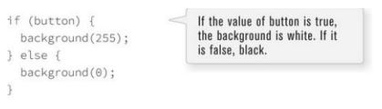I can then check to see if the mouse location is inside the rectangle and if the mouse is pressed, setting the value of button to true or false accordingly.